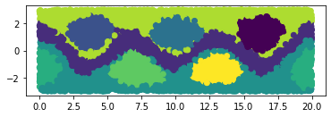

Documentation
Dimension reduction
Deep dim reduction
SINDy
Markov state models
Hidden Markov Models
Clustering
Examples
Notebook examples
VAMPNets on Alanine Dipeptide
MSM on Prinz potential
Dimension reduction of double-wedge dataset
Coherent set comparison on Bickley jet
Datasets
For developers
API docs
deeptime.base
deeptime.clustering
deeptime.sindy
deeptime.covariance
deeptime.decomposition
deeptime.markov
deeptime.markov.hmm
deeptime.markov.tools
deeptime.basis
deeptime.kernels
deeptime.data
deeptime.plots
deeptime.numeric
deeptime.util
Other
Imprint
Software License
Version
Latest release (0.4.4)
Trunk version
Related Topics
Documentation overview
Previous:
VAMP vs. TICA vs. PCA
Next:
VAMPNets on Alanine Dipeptide
deeptime @ GitHub
Notebook examples
¶
Notebooks containing some longer example systems.
VAMPNets on Alanine Dipeptide
MSM on Prinz potential
Dimension reduction of double-wedge dataset

Coherent set comparison on Bickley jet